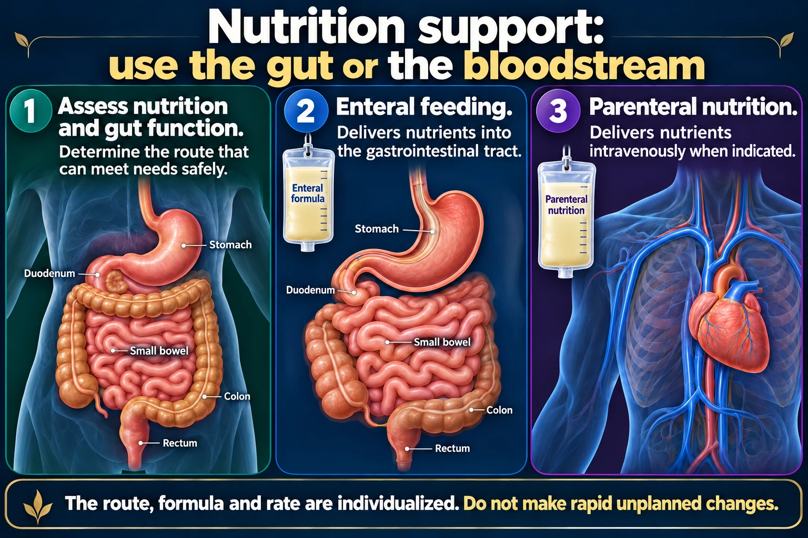

Before starting an intermittent nasogastric feeding, which pairing of client position and placement verification is correct?
Answer
High-Fowler position — check the pH of the gastric aspirate
Reasoning
HIGH-FOWLER POSITIONING REDUCES ASPIRATION RISK, AND CHECKING ASPIRATE pH IS A RELIABLE BEDSIDE METHOD TO HELP CONFIRM GASTRIC PLACEMENT.
Clinical detail
Auscultating injected air is no longer considered a reliable way to verify tube placement.
Why the other answers do not fit
- High-Fowler position — auscultate over the epigastrium while injecting air into the tube
HIGH-FOWLER POSITIONING REDUCES ASPIRATION RISK, AND CHECKING ASPIRATE pH IS A RELIABLE BEDSIDE METHOD TO HELP CONFIRM GASTRIC PLACEMENT.
- Trendelenburg position — auscultate over the epigastrium while injecting air into the tube
Auscultating injected air is no longer considered a reliable way to verify tube placement.
- Supine position — check the pH of the gastric aspirate
HIGH-FOWLER POSITIONING REDUCES ASPIRATION RISK, AND CHECKING ASPIRATE pH IS A RELIABLE BEDSIDE METHOD TO HELP CONFIRM GASTRIC PLACEMENT.
